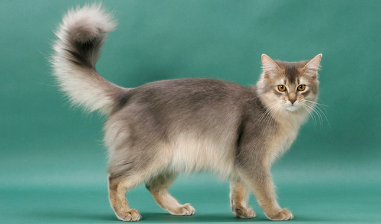

Somali

Origin: Shared Origin, Canada & United States
Temperament: Active, curious, and bold.
One of my personal favorites the Somali breed is a direct descendant of the Abyssinian. It is essentially a long-haired variety but remains it's own recognized breed since the 1960s.